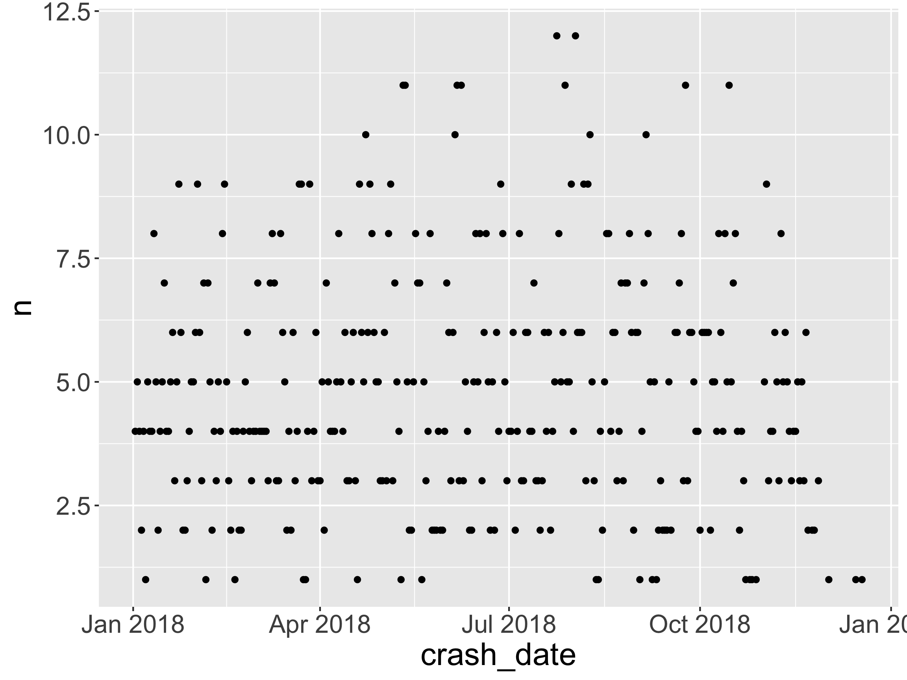
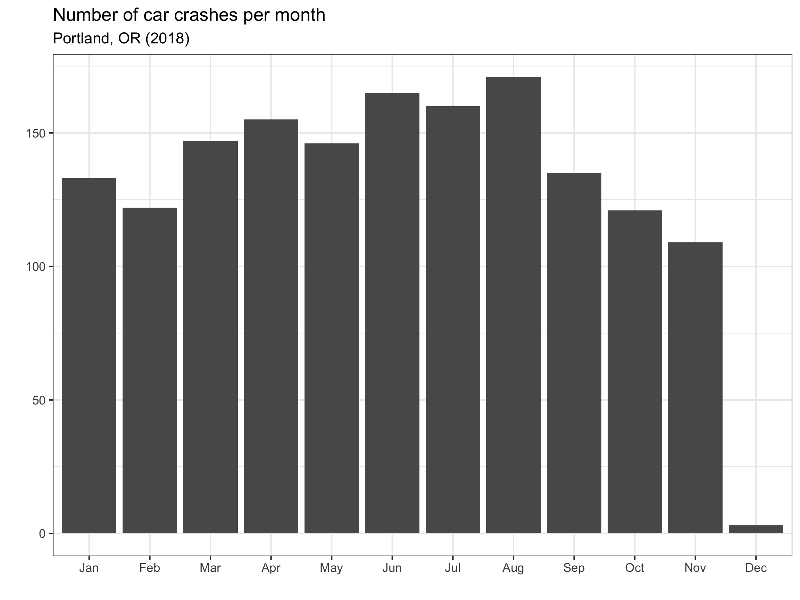
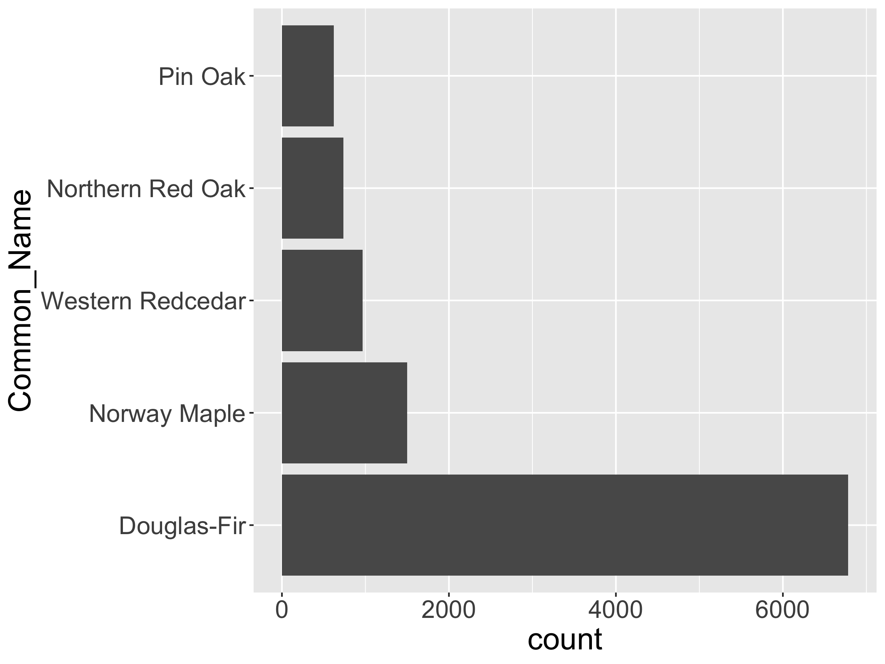
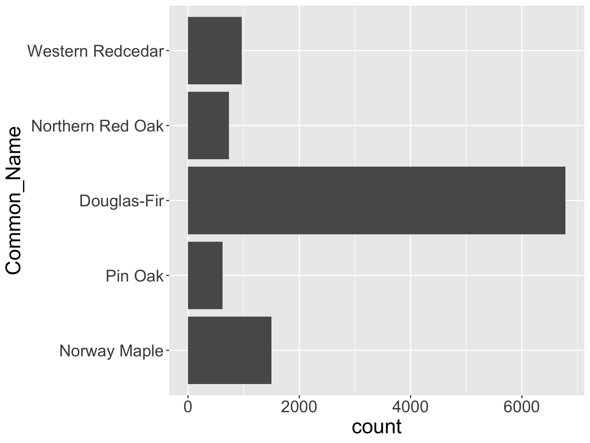
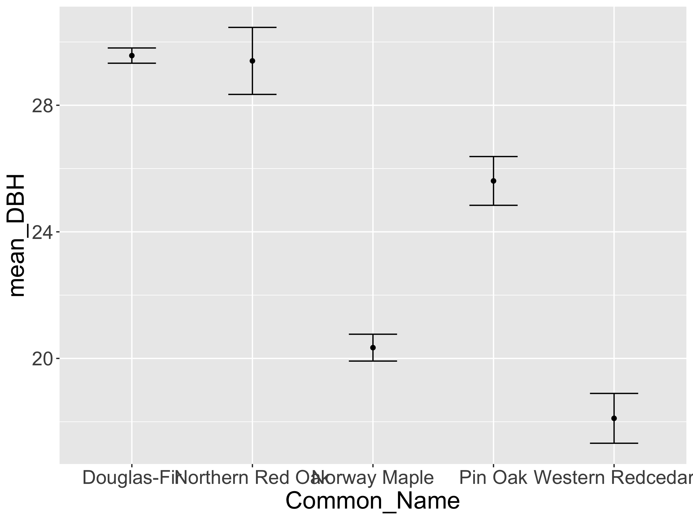
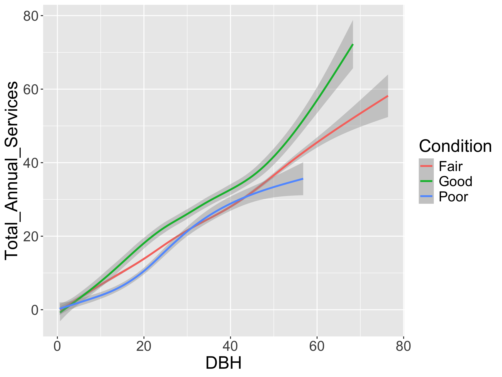
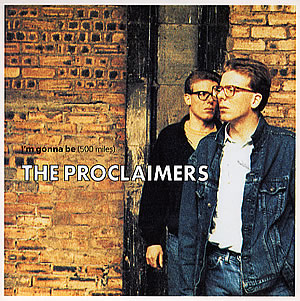

Different Classes in R
Grayson White
Stat 241
Week 7 | Fall 2026
Annoucements
- Welcome to the admitted students!!
- DataFest 2026 @ Willamette
- Great opportunity to meet folks and show off your data science skills!
Week 7 Goals
Mon Lecture
- Learn more about strings, factors, dates, and times in
R!
Wed Lecture
- Project 1 work day
Project 1 Check-In
- If you haven’t already, make sure to read over the “Tips for getting started” section of the Project 1 instructions.
- Everyone should have access to their project group repo.
- Make sure to come by office hours with questions or to talk out your plan for your dashboard!
Timeline
- 3/2: Receive project groups released
- 3/4: Receive project instructions and invite to your group’s GitHub repo.
- Please use your assigned Stat 241 GitHub repo for this project.
- 3/18 (noon): Post a working draft of your dashboard to https://www.shinyapps.io/
- 3/18 (noon): Post the link to the group’s dashboard to this spreadsheet.
- 3/18 - 3/20: Peer feedback period
- Each person will provide feedback on the dashboards of two groups.
- More guidance on providing feedback will be given in class that week.
- Peer feedback is due 3/20 at 10pm.
- 4/3 10pm: Link for the final version of dashboard should be added to this spreadsheet and PDF of your data scientist’s statement should be submitted on Gradescope.
- 4/5 10pm: Group member feedback form due.
Projects and Git/GitHub
Github Repo =
RStudioProject / Positron folderThis means you need to create a new
RStudioproject that is synced with your group’s GitHub repo that I created.- Quick video tutorial available here
Workflow
Once your GitHub repo and RStudio project are synced, here’s your workflow:
Pull the most recent version of the repo from GitHub to your RStudio project.
Do some work on your project in RStudio.
- Commit that work.
- Committing takes a snapshot of all the files in the project.
- Look over the Diff: which shows what has changed since your last update.
- Include a quick note, Commit Message to summarize the motivation for the changes.
- Push your commit to GitHub from RStudio.
Git Collaboration: Merge conflicts
- What if my collaborators and I both make changes?
- Scenario: Your collaborator makes changes to a file, commits, and pushes to GitHub. You also modify that file, commit and push.
- Result: Your push will fail because there’s a commit on GitHub that you don’t have.
- Usual Solution: Pull and usually git will merge their work nicely with yours. Then push. If that doesn’t work, you have a merge conflict. Let’s cross that bridge when we get there.
- How to avoid merge conflicts?
- First, always pull when you are going to work on your project.
- Then, always commit and push when you are done even if you made small changes.
Collaboration: Git Style
Projects: Can use to create to do lists and stay organized.
Issues: Useful method to communicate with your group members.
Branches: A tool for taking a detour from the main stream of development.
Git Branches
- Branch = Detour from main stream of development.
- Workflow:
- Create a new branch.
- Checkout (switch) to that branch.
- Commit the work for that branch.
- Merge it into the main branch.
- Can also be done on GitHub via a Pull Request.
If you have Git experience or want to try out branches, check out Ch 22 in Happy Git with R.
For novices, I recommend staying on the main branch.
Now: dates and times in R with lubridate
Why do we need to talk about dates and times?
Question: When did the crashes happen?
Dates
[1] "02/01/18 00:00:00" "02/11/18 00:00:00" "03/09/18 00:00:00"
[4] "04/09/18 00:00:00" "10/10/18 00:00:00" "05/24/18 00:00:00"[1] "character"What class should it be?
Converting Strings to Dates
Identify the order of year, month, day, hour, minute, second
Pick the
lubridatefunction that replicates that order.
Why do we need to talk about dates and times?
Question: When did the crashes happen?

- Hard to see daily patterns. Switch time interval?
Why do we need to talk about dates and times?
Question: When did the crashes happen?

- Better! Chart junk?
Let’s Look at Portland’s Biketown Data
All check-outs for July - August of 2017
Rows: 9,999
Columns: 6
$ StartDate <chr> "8/17/2017", "7/22/2017", "7/27/2017", "7/12/2017", "7/…
$ StartTime <time> 10:44:00, 14:49:00, 14:13:00, 13:23:00, 19:30:00, 10:0…
$ EndDate <chr> "8/17/2017", "7/22/2017", "7/27/2017", "7/12/2017", "7/…
$ EndTime <time> 10:56:00, 15:00:00, 14:42:00, 13:38:00, 20:30:00, 10:5…
$ Distance_Miles <dbl> 1.91, 0.72, 3.42, 1.81, 4.51, 5.54, 1.59, 1.03, 0.70, 1…
$ BikeID <dbl> 6163, 6843, 6409, 7375, 6354, 6088, 6089, 5988, 6857, 6…Let’s Look at Portland’s Biketown Data
- Fix the class of the date columns.
- Create date-time columns.
Rows: 9,999
Columns: 8
$ StartDate <date> 2017-08-17, 2017-07-22, 2017-07-27, 2017-07-12, 2017-0…
$ StartTime <time> 10:44:00, 14:49:00, 14:13:00, 13:23:00, 19:30:00, 10:0…
$ EndDate <date> 2017-08-17, 2017-07-22, 2017-07-27, 2017-07-12, 2017-0…
$ EndTime <time> 10:56:00, 15:00:00, 14:42:00, 13:38:00, 20:30:00, 10:5…
$ Distance_Miles <dbl> 1.91, 0.72, 3.42, 1.81, 4.51, 5.54, 1.59, 1.03, 0.70, 1…
$ BikeID <dbl> 6163, 6843, 6409, 7375, 6354, 6088, 6089, 5988, 6857, 6…
$ StartDateTime <dttm> 2017-08-17 10:44:00, 2017-07-22 14:49:00, 2017-07-27 1…
$ EndDateTime <dttm> 2017-08-17 10:56:00, 2017-07-22 15:00:00, 2017-07-27 1…Grabbing Components
Grabbing Components
Grabbing Components
Grabbing Components
And if you are in R and want to know the current date/time:
Topic Shift!
Factors with forcats

Motivation: Imposing Structure on Categorical Variables
Motivation: Imposing Structure on Categorical Variables
How might we want to restructure this graph?
Levels and Class
[1] "character"[1] "Douglas-Fir" "Northern Red Oak" "Norway Maple" "Pin Oak"
[5] "Western Redcedar"[1] "factor"- How is
Rdeciding the order of the levels?
What Are the levels/categories?
[1] Douglas-Fir Northern Red Oak Norway Maple Pin Oak
[5] Western Redcedar
5 Levels: Douglas-Fir Northern Red Oak Norway Maple ... Western Redcedar[1] Douglas-Fir Northern Red Oak Norway Maple Pin Oak
[5] Western Redcedar
5 Levels: Douglas-Fir Northern Red Oak Norway Maple ... Western RedcedarReorder the Levels

Note: This code didn’t permanently change the order in
pdxCommon. Why?How might we want to restructure this graph?
reverse the Levels

Or, If You Love the Pipe…
Reorder the Levels

- Can also relevel manually
Reorder the Levels

- Or maybe I just want to bring one or two category to the front
What Have We Wrangled Here?
# A tibble: 5 × 4
Common_Name mean_DBH lb_DBH ub_DBH
<fct> <dbl> <dbl> <dbl>
1 Douglas-Fir 29.6 29.3 29.8
2 Northern Red Oak 29.4 28.3 30.5
3 Norway Maple 20.3 19.9 20.8
4 Pin Oak 25.6 24.8 26.4
5 Western Redcedar 18.1 17.3 18.9Reordering by Another Variable

- How might we want to reorder
Common_Name?
Reordering by Another Variable
Reordering by Other Variables

- How might we want to reorder
Condition?
Factors
Other useful functions in forcats:
fct_collapse(): Collapse some levels togetherfct_drop(): Remove levels (useful after afilter()!)fct_recode(): Change names of levels
And now:
Strings with stringr!

Language
String Manipulation with Stringr
- Learn how to handle character vectors!
- Character manipulation
- Pattern matching
- Let’s look at some of the functionalities of
stringrusing a character vector of song lyrics.
Our Toy Lyric
[1] "But I would walk 500 miles,"
[2] "And I would walk 500 more,"
[3] "Just to be the man who walks a 1000 miles,"
[4] "To fall down at your door" - Song?
- Artist?

String Length
- Most
stringrfunctions start withstr_
Accessing and Replacing
Change Cases
[1] "BUT I WOULD WALK 2 MILES,"
[2] "AND I WOULD WALK 500 MORE,"
[3] "JUST TO BE THE MAN WHO WALKS A 1000 MILES,"
[4] "TO FALL DOWN AT YOUR DOOR" [1] "But I Would Walk 2 Miles,"
[2] "And I Would Walk 500 More,"
[3] "Just To Be The Man Who Walks A 1000 Miles,"
[4] "To Fall Down At Your Door" Sorting
Pattern Matching
- Learn to:
- Detect pattern
- Extract pattern
- Replace pattern
- Split pattern
Common Goal: Match a particular pattern
I want to match the pattern 500 from lyric.
[1] "But I would walk 2 miles,"
[2] "And I would walk 500 more,"
[3] "Just to be the man who walks a 1000 miles,"
[4] "To fall down at your door" Let’s make it more general.
I want to locate all the numbers.
[1] "But I would walk 2 miles,"
[2] "And I would walk 500 more,"
[3] "Just to be the man who walks a 1000 miles,"
[4] "To fall down at your door" Trivia Time!
Name the artist and song title for each of the following!
How should we modify the code to locate all the numbers from these lyrics of various songs?
[1] "But I would walk 500 miles"
[2] "Yeah, 360. When you're in the mirror, do you like what you see?"
[3] "I have loved you for a 1000 years, I'll love you for a 1000 more"
[4] "Where 2 and 2 always makes a 5"
[5] "17-38, ay"
[6] "I'm so 3008, You so 2000 and late" [1] │ But I would walk <500> miles
[2] │ Yeah, 360. When you're in the mirror, do you like what you see?
[3] │ I have loved you for a <1000> years, I'll love you for a <1000> more
[4] │ Where <2> and <2> always makes a 5
[5] │ 17-38, ay
[6] │ I'm so 3008, You so <2>000 and lateHow should we modify the code to locate all the numbers from these lyrics of various songs?
[1] "But I would walk 500 miles"
[2] "Yeah, 360. When you're in the mirror, do you like what you see?"
[3] "I have loved you for a 1000 years, I'll love you for a 1000 more"
[4] "Where 2 and 2 always makes a 5"
[5] "17-38, ay"
[6] "I'm so 3008, You so 2000 and late" [1] │ But I would walk <500> miles
[2] │ Yeah, <360>. When you're in the mirror, do you like what you see?
[3] │ I have loved you for a <1000> years, I'll love you for a <1000> more
[4] │ Where <2> and <2> always makes a <5>
[5] │ <17>-<38>, ay
[6] │ I'm so <3008>, You so <2>000 and lateNeed for More Sophisticated Pattern Matching
But now imagine you had a very long vector and you want to locate any number?
Not a good approach!
Next time: Regular Expressions!